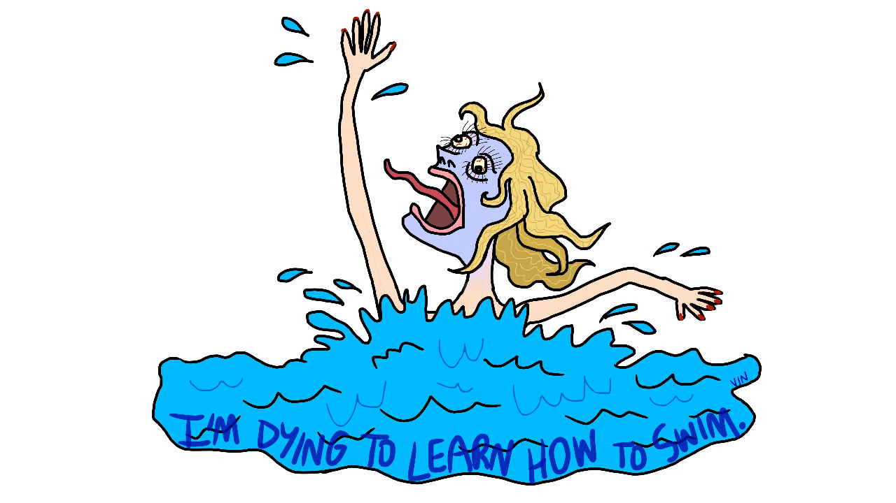

❃ I've recently started making gifs in Adobe Animate. Enjoy my second ever gif below!
❃ If you really wanted to get to know me, you could watch the nearly 7 hours of me co-hosting CS50 Fairs in 2018 and 2019. I try to be funny. I really, really do.